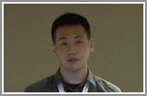

Tutorials
- [T2] Data-Driven Behavioral Analytics: Observations, Representations and Models with Dr. Peng Cui and Professor Jiawei Han at the 25th ACM International Conference on Information and Knowledge Management (CIKM), Indianapolis, October 2016. (Taught 2.5 of 3 hours, 70+ audience)
- [T1] Behavior Modeling in Social Networks: From Micro to Macro with Dr. Peng Cui at the 15th IEEE International Conference on Data Mining (ICDM), Atlantic City, November 2015. (Taught all 3 hours, 50+ audience, $700 honorium)
Talks: Videos Online

|
CatchTartan: Representing and Summarizing Dynamic Multicontextual Behaviors Talk at the 22rd ACM SIGKDD, San Francisco, August 2016. [paper] [slides] |
|
CatchSync: Catching Synchronized Behavior in Large Directed Graphs Talk at the 20th ACM SIGKDD, New York City, August 2014. [paper] [slides] | |
|  |
FEMA: Flexible Evolutionary Multi-faceted Analysis for Dynamic Behavioral Pattern Discovery Talk at the 20th ACM SIGKDD, New York City, August 2014. [paper] [slides] |
Invited Talks
- [K4] "Data-driven Behavioral Analytics with Networks", at Ohio State University, October 25, 2016. (Invited by Professor Huan Sun)
- [K3] "Modeling Complex Behavior in Social Media", at University of Massachusetts Boston, November 23, 2015. (Invited by Professor Wei Ding)
- [K2] "Prediciton and Anomaly Detection in Large-Scale Social Networks", at Tencent Big Data Seminar, July 25, 2014. (Invited by Tencent Inc.)
- [K1] "User Behavior Analysis in Social Networks: Pattern Discovery, Prediction and Anomaly Detection", at Microsoft Research Asia, July 14, 2014. (Invited by Senior Research Manager Dr. Xing Xie)
Thesis
- Ph.D. Thesis: Uncovering and Modeling Complex Behaviors in Social Media under the supervision of Professor Shiqiang Yang at Department of Computer Science and Technology, Tsinghua University, June 2015. Thesis commitee: Dr. Xindong Wu (President), Dr. Philip S. Yu, Dr. Yunde Jia, Dr. Xiaoyan Zhu, Dr. Haizhou Ai, Dr. Wenwu Zhu. [thesis (in Mandarin)] [slides] [slides (in Mandarin)]
- Bachelor Thesis: Predicting Sharing Behaviors in Social Media under the supervision of Professor Shiqiang Yang at Department of Computer Science and Technology, Tsinghua University, June 2010. [thesis (in Mandarin)] [slides (in Mandarin)]
Teaching
- UIUC CSX598 (Guest lecturer): Automatic Attribute Discovey in Advanced Topics in Information Retrieval (Fall 2016), invited by the Instructor Professor ChengXiang Zhai.
- UIUC CS412 (Substitute lecturer): Data Warehousing and On-line Analytical Processing, Chapter 4 of Introduction to Data Warehousing and Data Mining (Fall 2016). The Instructor is Professor Jiawei Han.
- UIUC CS412 P4 Project: An Introduction to Triple Scoring (WSDM Cup 2017 T2), a complementary dataset (9M): Freebase Features of Person Entities.
- TA in THU CS-SMT: Streaming Media Technology for graduate students (Fall 2013).
- TA in THU CS-MFA: Multimedia Fundamentals and Applications for undergraduate students (Spring 2013).